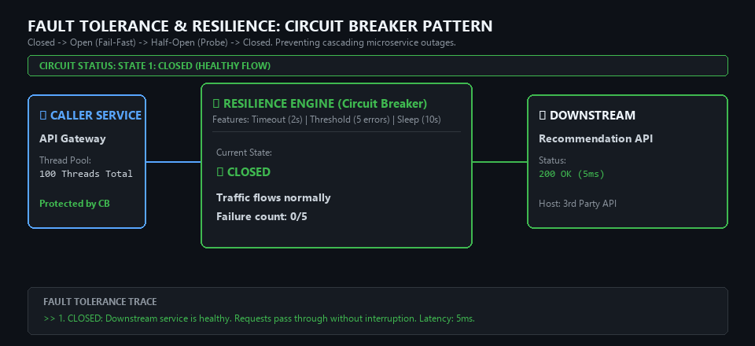

20 - Fault Tolerance & Resilience: Circuit Breakers, Bulkheads & Retries
Executive Summary: In distributed architectures with hundreds of interconnected microservices, network partitions, slow dependencies, and service crashes are not edge cases—they are everyday mathematical certainties. Without defensive patterns, a single degraded downstream database or third-party API can trigger catastrophic cascading failures that crash an entire company's platform in seconds. Resilience engineering decouples failure domains using Timeouts, Circuit Breakers (fail-fast), Exponential Backoff with Full Jitter (anti-retry-storm), and Bulkheads (compartmentalized resource isolation).
🏢 Real-World Deep Dives: Detailed case studies of how Google & Netflix implement this in production are documented in REAL_WORLD_EXAMPLES.md.
⏱️ Prerequisites: What You Need to Know First
To get the most out of this module, make sure you understand:
- 01 - Client-Server Networking: TCP connection timeouts, socket read timeouts, and thread pool blocking.
- 03 - Load Balancing: Active and passive health checks.
- 05 - Rate Limiting: Protecting services from traffic surges.
- 17 - Message Queues & Distributed Logs: Asynchronous decoupling and Dead-Letter Queues.
🧒 The 30-Second Version (ELI5)
Imagine an apartment building:
- Circuit Breaker: If you plug a faulty toaster into a wall outlet that sparks, the electrical fuse in your basement automatically trips and cuts power to the toaster in 1 millisecond. It stops the entire apartment building from catching fire!
- Bulkhead: A submarine is divided into watertight compartments separated by heavy steel doors. If a torpedo punches a hole in Compartment 1, water fills only that single room. The other 5 rooms stay dry, and the submarine continues to float.
- Exponential Backoff with Jitter: If you call a friend and their line is busy, you don't redial every 0.1 seconds. You wait 5 seconds, then 10 seconds, adding a random few seconds so you don't clash with someone else trying to call at the exact same moment.
🍕 Everyday Analogy
| Resilience Pattern | Real-World Engineering Analogy | Technical Reality in Microservices |
|---|---|---|
| Circuit Breaker | Household electrical circuit breaker tripping on short circuit | Halts calls to failing downstream dependency; returns fallback in 0.1ms |
| Bulkhead | Watertight compartments in a submarine hull | Separate thread pools / connection pools per downstream service |
| Timeout | Walking away from a restaurant queue after waiting 15 minutes | Aborting an HTTP request if socket doesn't return bytes within 1000ms |
| Exponential Backoff | Waiting longer between redial attempts when phone is busy | $T_{\text{wait}} = \text{Base} \times 2^{\text{attempt}}$ |
| Jitter | Arriving at a party at a slightly randomized time to avoid a traffic jam | Adding random noise $\text{Uniform}(0, T_{\text{wait}})$ to stagger retries |
| Graceful Degradation | A hotel power outage turning on emergency hallway lights | Serving stale cached recommendations when personalized ML engine fails |
🧩 The Problem It Solves
The Anatomy of a Cascading Failure Storm
Consider an e-commerce platform with 50 microservices:
- The Product Recommendations Service encounters a slow database query, causing its response time to spike from $10\text{ ms}$ to $5,000\text{ ms}$ ($5\text{ seconds}$).
- The upstream API Gateway has a pool of 200 worker threads.
- Because incoming customer requests take 5 seconds to complete, all 200 API Gateway threads are soon blocked, sitting completely idle while waiting for network socket responses.
- When a new customer visits the website to check out their shopping cart (which has nothing to do with recommendations), the API Gateway cannot even accept the TCP connection because all threads are exhausted!
- Within 30 seconds, a minor glitch in recommendations has completely taken down user logins, cart checkout, and payments. The entire site is dark.
How Resilience Engineering Stops the Bleeding
- Timeouts: The gateway aborts calls after $500\text{ ms}$, freeing threads.
- Circuit Breaker: After 5 consecutive timeouts, the breaker trips to OPEN. Subsequent requests fail fast in $0.05\text{ ms}$ and return a cached default list without even touching the network!
- Bulkheads: The gateway allocates at most 10 threads to Recommendations, preserving 190 threads exclusively for Checkout and Payments.
🖼️ Picture It: Architecture & Flow
High-Resolution Circuit Breaker Animation
Below is an animated trace of a Circuit Breaker transitioning from CLOSED $\rightarrow$ OPEN (fail-fast fallback) $\rightarrow$ HALF-OPEN (canary probe) $\rightarrow$ CLOSED:

Circuit Breaker 3-State Finite State Machine
stateDiagram-v2
[*] --> Closed: Initial State
Closed --> Open: Error rate exceeds threshold<br/>(e.g., >50% errors over 10s window)
Open --> Open: Fail-Fast!<br/>Return fallback in 0.1ms
Open --> HalfOpen: Sleep window expires<br/>(e.g., after 30s cooldown)
HalfOpen --> Closed: Canary probe succeeds!<br/>Reset error counters
HalfOpen --> Open: Canary probe fails!<br/>Revert to Open immediately
note right of Closed
Normal healthy operation.
All requests pass to downstream.
end note
note right of Open
Downstream isolated.
Zero network load sent.
Protects upstream thread pools.
end note
🔢 Walk-Through with Real Numbers
Let's calculate thread pool exhaustion and retry storm blast radiuses:
1. Thread Pool Exhaustion Math
- API Gateway Thread Pool: $N = 100\text{ worker threads}$.
- Normal Latency: $L = 20\text{ ms} = 0.02\text{ s}$.
- Throughput Capacity (Little's Law): $$\text{Throughput} = \frac{N}{L} = \frac{100}{0.02} = \mathbf{5,000\text{ requests/second}}$$
- Downstream Slowdown: Downstream service slows down to $L = 2,000\text{ ms} = 2.0\text{ s}$. $$\text{Degraded Capacity} = \frac{100}{2.0} = \mathbf{50\text{ requests/second!}}$$ If traffic is $200\text{ req/sec}$, the thread pool exhausts in $0.66\text{ seconds}$, causing site-wide HTTP 503 errors!
2. The Disaster of Immediate Retries (Retry Storms)
Suppose 10,000 users encounter a temporary database glitch:
- Without Backoff: 10,000 clients immediately retry 3 times within 100 ms $\implies$ 30,000 additional queries hammer the dying database, ensuring it never recovers!
- With Full Jitter Backoff: $$t = \text{Uniform}(0, \min(M, B \times 2^{\text{attempt}}))$$ Retries are scattered smoothly across a 10-second Gaussian timeline, reducing instantaneous load on the recovering database by 98%.
⚙️ How It Works Under the Hood
1. The Anatomy of Timeouts
Never use a single generic "timeout." Robust microservices define two distinct timeout boundaries:
- Connect Timeout: Time allowed to complete the TCP 3-way handshake and TLS negotiation. Should be aggressive: $50\text{–}200\text{ ms}$ in internal data centers.
- Read / Socket Timeout: Time allowed between receiving individual data packets from the server. Typically set to $1,000\text{–}3,000\text{ ms}$.
2. Circuit Breaker Mechanics
A Circuit Breaker (popularized by Netflix Hystrix and Resilience4j) operates as a proxy wrapping outbound remote calls:
- CLOSED:
- Outbound calls pass through directly.
- Maintains a sliding time window (e.g. last 100 calls or last 10 seconds).
- If failure rate exceeds threshold (e.g., $50%$) or consecutive errors $\ge 5$, state flips to OPEN.
- OPEN:
- Outbound calls are short-circuited immediately without opening a network socket.
- Returns a fallback response (or throws
CircuitBreakerOpenException) in $<100\ \mu\text{s}$. - Protects upstream memory and gives the downstream service breathing room to recover.
- HALF-OPEN:
- After a cooldown duration (e.g., 30 seconds), the circuit transitions to HALF-OPEN.
- Permits a small configurable number of trial requests (canary probes, e.g. 3 requests).
- If all probes succeed, the circuit resets to CLOSED. If any probe fails, it flips back to OPEN for another cooldown period.
3. The Bulkhead Pattern
Named after the partition walls in marine vessels:
- Thread Pool Bulkheads: Each downstream service is assigned a dedicated thread pool with an execution queue:
PaymentThreadPool: 20 threads.InventoryThreadPool: 20 threads.RecommendationsThreadPool: 5 threads. If the Recommendations service hangs, only its 5 threads block. The 20 payment threads continue operating with zero disruption.
- Semaphore Bulkheads: Instead of separate thread pools (which incur CPU context-switching overhead), use atomic semaphores to cap concurrent in-flight requests per dependency.
⚖️ Trade-Offs & Decision Matrix
| Resilience Pattern | Blast Radius Reduction | Latency Overhead | Implementation Complexity | Primary Risk |
|---|---|---|---|---|
| Strict Timeouts | High | Zero | Lowest | Cutting off slow but valid queries if set too tight |
| Circuit Breaker | Highest (Fail-Fast) | Negligible (<50 $\mu$s) | Medium | Flapping between states if thresholds misconfigured |
| Bulkheads | Highest (Resource Isolation) | Small (thread context switch) | Medium | Wasting idle threads if static pools are over-provisioned |
| Exponential Backoff | High (Prevents Retry Storms) | Adds wait time to retries | Low | Increases total client request duration |
| Fallback Caching | High (Preserves User UX) | Ultra-Low (<1 ms) | Low | Serving outdated data |
🚫 Common Mistakes & Production Pitfalls
-
Retrying Non-Idempotent Writes:
- Pitfall: Retrying
POST /orders/checkoutupon receiving a 504 Gateway Timeout. - Reality: A 504 timeout means the gateway didn't get an answer in time; it does not mean the downstream service didn't execute the transaction! Retrying without an Idempotency Key charges the customer's credit card twice. Only idempotent operations (GET, PUT, DELETE, or requests with unique idempotency keys) may be automatically retried.
- Pitfall: Retrying
-
Synchronized Retries (The "Thundering Herd" Retry Storm):
- Pitfall: Using exponential backoff without jitter ($t = 1\text{s}, 2\text{s}, 4\text{s}$).
- Reality: When an outage occurs, 50,000 clients fail simultaneously. They all sleep for exactly 1.0 second, and all 50,000 clients retry at the exact same millisecond, instantly re-crashing the recovering service. Always add random jitter!
-
Infinite Retry Loops Without Deadlines:
- Pitfall: Microservice A retries 3 times to Service B. Service B retries 3 times to Service C. Service C retries 3 times to Service D.
- Result: $3 \times 3 \times 3 = \mathbf{27\text{ multiplicative requests}}$ for a single customer action!
- Fix: Use Distributed Context Deadlines (e.g. gRPC deadlines): propagate a single
timeout_epochheader across all downstream hops. If the deadline expires, all downstream retries abort immediately.
💻 Try It Yourself: Python Simulation
The companion simulation script demo.py implements:
- A production-style Circuit Breaker state machine (Closed $\rightarrow$ Open $\rightarrow$ Half-Open $\rightarrow$ Closed).
- Live fail-fast demonstration: latency dropping from timeouts down to $0.001\text{ ms}$ with fallback responses.
- The AWS Exponential Backoff with Full Jitter algorithm.
- A Bulkhead simulation showing how isolated thread limits protect healthy endpoints from hanging dependencies.
Run it locally in your terminal:
python demo.py
🌍 Where You'll See It in Production
- Netflix (Resilience4j / Hystrix): Netflix pioneered the Circuit Breaker and Bulkhead patterns in cloud computing to prevent outages across their thousands of daily microservice deployments.
- Envoy Proxy & Istio Service Mesh: Operates circuit breakers, connection pool caps, and retry budgets at the infrastructure sidecar layer, decoupling resilience logic from application application code.
- AWS SDKs: All AWS client libraries (boto3, AWS Java SDK, AWS Go SDK) enforce Exponential Backoff with Full Jitter by default on all 5xx and throttling errors.
- Cloudflare: Deploys automated edge fail-fast circuit breakers to protect origin servers from crashing during sudden traffic spikes.
🎯 Top Interview Questions & Deep Answers
Q1: "What is the difference between a Connect Timeout and a Read Timeout, and how do you configure them in microservices?"
Interviewer Goal: Testing whether the candidate understands network socket fundamentals.
Model Answer: "In network programming, timeouts govern different phases of the socket lifecycle:
- Connect Timeout:
- The maximum time allowed to establish the TCP connection (the 3-way handshake: SYN $\rightarrow$ SYN-ACK $\rightarrow$ ACK) and negotiate TLS.
- Because connection establishment in a cloud datacenter only involves OS kernel networking stacks, connect timeouts should be very aggressive (e.g. $50\text{–}100\text{ ms}$). If a server doesn't respond to a TCP SYN packet in 100 ms, its network card or host is likely dead.
- Read / Socket Timeout:
- The maximum time allowed between receiving successive data packets from the server after the connection is established.
- This covers server-side database query execution, business processing, and payload serialization.
- It should be set to match the p99 latency SLA of the downstream service (e.g. $1,000\text{–}2,000\text{ ms}$). Confusing the two is dangerous: setting a 10-second connect timeout allows threads to sit frozen during network outages, whereas setting a 50ms read timeout aborts valid, heavy database queries."
Q2: "Why is Exponential Backoff without Jitter an anti-pattern during outages?"
Interviewer Goal: Checking deep knowledge of synchronization anomalies and retry storms.
Model Answer: "When an outage occurs in a high-traffic system (for example, a database restarts), thousands of clients fail simultaneously at time $t_0$. If clients use deterministic exponential backoff without jitter ($t_{\text{wait}} = 2^{\text{attempt}}$):
- All 10,000 clients sleep for exactly 1.0 second.
- At $t_0 + 1.0\text{s}$, all 10,000 clients wake up at the exact same millisecond and retry in unison.
- This creates massive, synchronized harmonic waves of traffic (Retry Storms) that repeatedly hammer and re-crash the recovering database.
The Fix is Full Jitter: $$t_{\text{wait}} = \text{Uniform}\big(0, \min(M, B \times 2^{\text{attempt}})\big)$$ Randomizing the sleep duration uniformly breaks the synchronization lock-step. Retries are dispersed smoothly across time, allowing the recovering database to process traffic gradually without spikes."
Q3: "Explain the three states of a Circuit Breaker and the exact transition triggers between them."
Interviewer Goal: Evaluating state machine precision.
Model Answer: "A Circuit Breaker operates in three distinct states:
- CLOSED:
- Normal operation. All calls pass through to downstream.
- Transition to OPEN: Triggered when the failure rate over a rolling time window exceeds a configured threshold (e.g. $>50%$ error rate over the last 100 requests) or when consecutive timeouts exceed a limit (e.g., 5 consecutive failures).
- OPEN:
- Outbound calls fail fast immediately ($<1\ \mu\text{s}$) without sending any network packets. Fallback data or errors are returned instantly.
- Transition to HALF-OPEN: Triggered when an idle sleep window / cooldown timer expires (e.g., 30 seconds).
- HALF-OPEN:
- The breaker allows a limited number of trial requests (canary probes, e.g. 1 to 5 requests) to pass through to the downstream service.
- Transition to CLOSED: If all canary probes succeed, the breaker assumes the downstream dependency has fully recovered, resets error counters, and returns to CLOSED.
- Transition back to OPEN: If any canary probe fails, the breaker immediately reverts to OPEN for another cooldown period."
Q4: "What is the Bulkhead pattern, and what is the difference between Thread Pool Bulkheads and Semaphore Bulkheads?"
Interviewer Goal: Testing resource management and concurrency design skills.
Model Answer: "The Bulkhead pattern isolates resources into bounded pools so that failure in one dependency cannot exhaust all resources in the host process:
- Thread Pool Bulkheads:
- Each downstream dependency has a dedicated worker thread pool and task queue.
- If Service A hangs, only Service A's thread pool fills up. The thread pools for Service B and Service C remain completely unaffected.
- Advantage: Asynchronous, supports true execution isolation.
- Disadvantage: Higher memory footprint and CPU overhead from thread context switching.
- Semaphore Bulkheads:
- Uses an atomic counter (semaphore) on the caller thread to limit the number of concurrent in-flight requests to a dependency.
- If the counter reaches the limit (e.g., 10 concurrent requests), additional requests are rejected immediately without creating new threads.
- Advantage: Ultra-lightweight with zero thread context switching overhead.
- Disadvantage: Synchronous; caller threads can still block until their timeout expires."
Q5: "What is a Retry Budget, and how does it prevent cascading retries?"
Interviewer Goal: Assessing advanced cloud architecture resilience (Google SRE standard).
Model Answer: "A Retry Budget is a mechanism introduced by Google SRE to prevent retries from magnifying outages:
- Under standard retry logic, if 100% of requests fail, clients retry 3 times, tripling the load on a dying backend.
- A Retry Budget enforces a hard ceiling: a client is only allowed to retry if retries account for less than a fixed percentage (typically $10%$) of total historical requests over a rolling window.
- If the backend is healthy and only 1% of requests fail, the client has plenty of retry budget and retries succeed.
- But if the backend experiences a major outage and failure rate spikes to 50%, the client exhausts its retry budget within seconds and stops retrying completely, returning errors immediately. This prevents clients from inadvertently launching a self-inflicted DDoS attack against recovering infrastructure."
✅ Check Yourself: Flash Quiz
1. Why should you never automatically retry a POST /payments/charge request that timed out with HTTP 504?
Because a 504 Gateway Timeout means the client did not receive a response in time; it does not mean the payment was not charged! Downstream may have successfully billed the card right before the timeout. Retrying non-idempotent writes risks double-charging the customer. Always use Idempotency Keys.
2. In a Circuit Breaker, what is the purpose of the HALF-OPEN state?
The HALF-OPEN state acts as a safe canary probe after the cooldown period. Instead of suddenly dumping 100% of traffic onto a recently recovering service, it sends a tiny number of trial requests (e.g. 1–3 requests) to test whether downstream is genuinely healthy before fully resetting to CLOSED.
3. How does the Bulkhead pattern protect a checkout service when an image-rendering microservice hangs?
By allocating separate, isolated thread pools or semaphores. The hanging image-rendering service will consume only its own small dedicated pool (e.g. 5 threads). The checkout service has its own independent pool (e.g. 50 threads), allowing customers to continue buying products without disruption.
📚 Go Deeper: Recommended Reading
- Release It! Design and Deploy Production-Ready Software by Michael T. Nygard — Chapters on Circuit Breakers, Bulkheads, Timeouts, and Stability Patterns.
- Site Reliability Engineering (The Google SRE Book) — Chapter 22: Addressing Cascading Failures.
- AWS Architecture Blog: Exponential Backoff and Jitter (Marc Brooker).
- Resilience4j Documentation: Fault tolerance library designed for functional programming (
resilience4j.readme.io).
🔗 Related Modules
- 01 - Client-Server Networking: Connection timeouts and socket mechanics.
- 03 - Load Balancing: Health checks and passive failover.
- 05 - Rate Limiting: Protecting backends from excessive throughput.
- 17 - Message Queues & Distributed Logs: Dead-Letter Queues and asynchronous backpressure absorption.